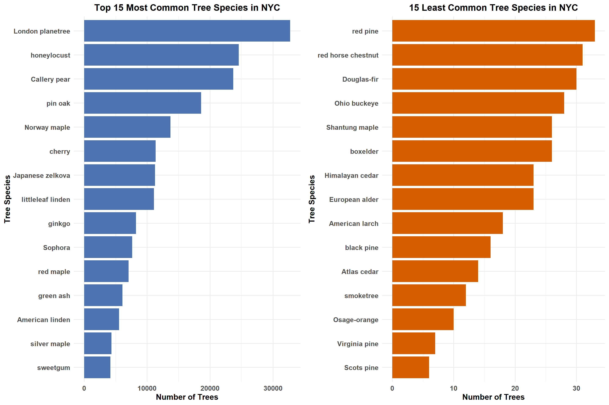
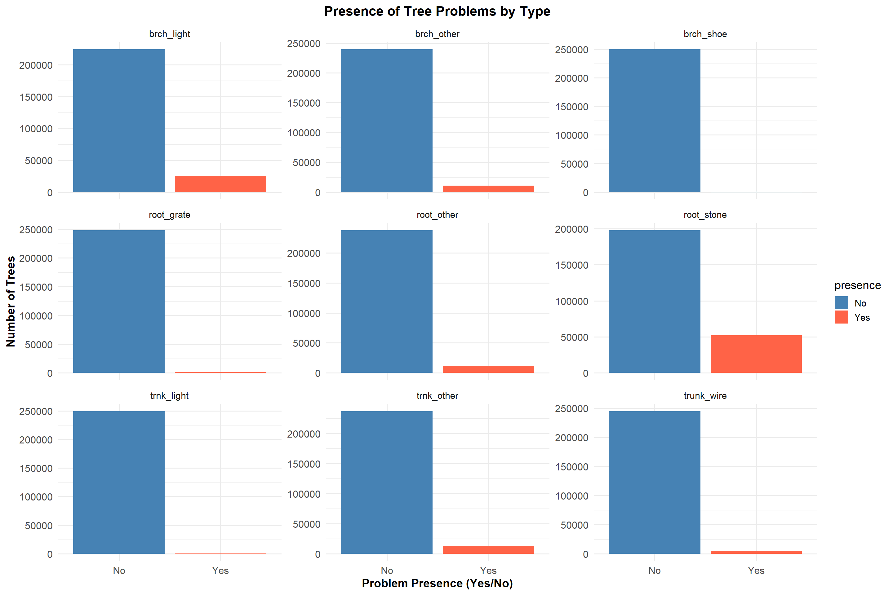
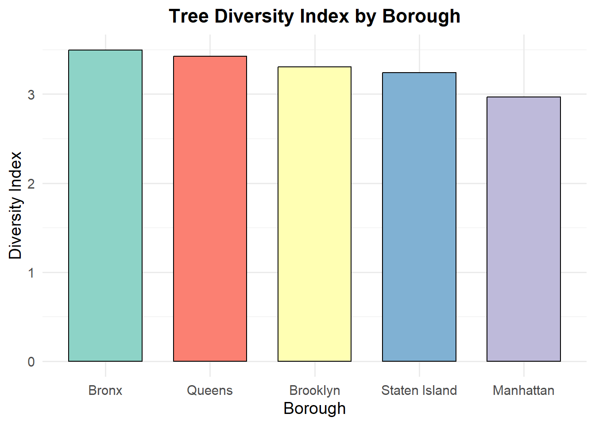
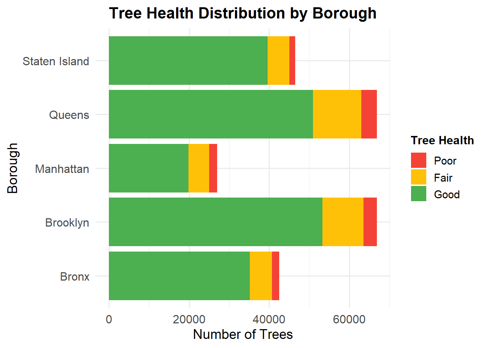
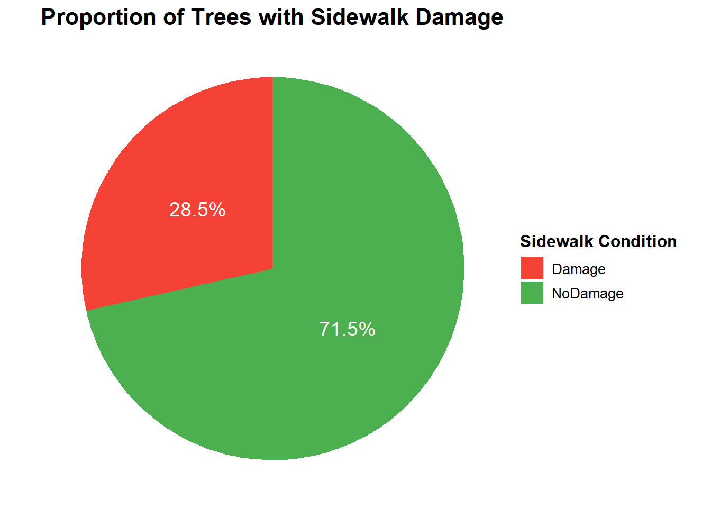
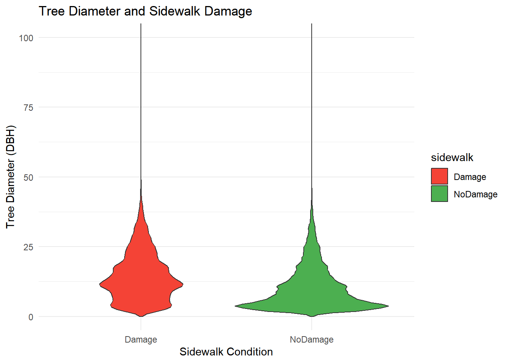
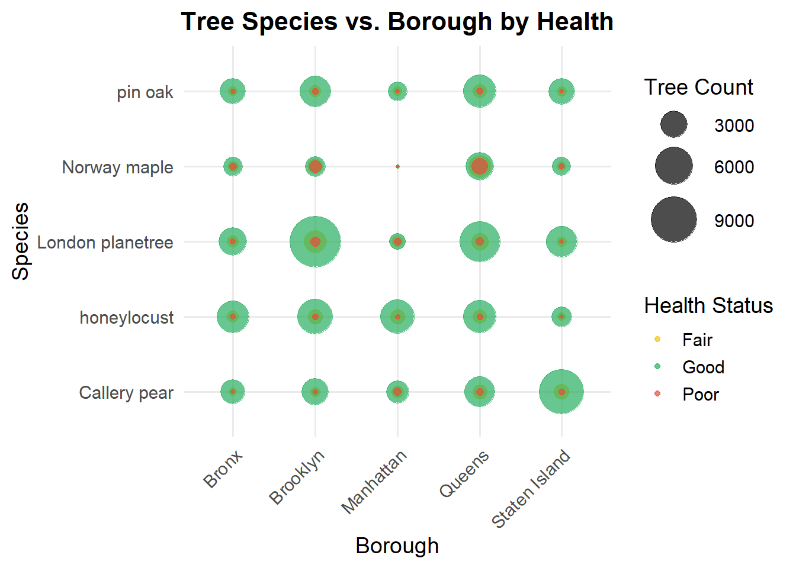
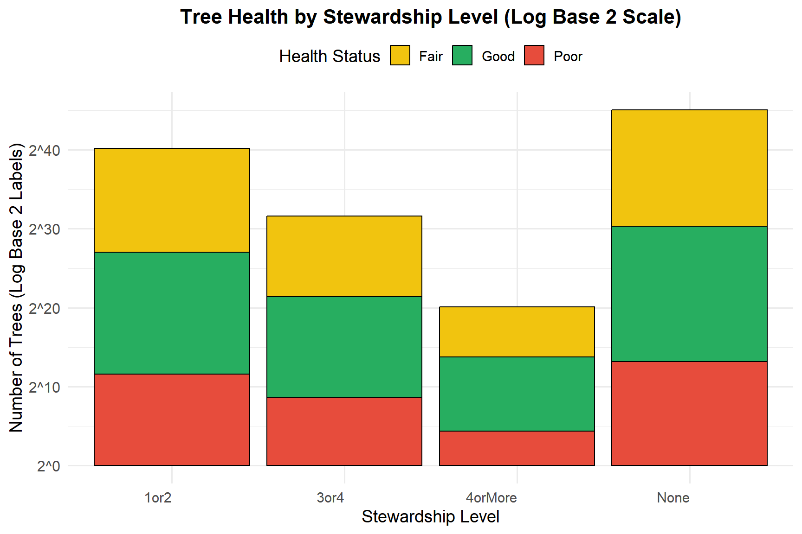

Lets first explore the overall composition of NYC’s tree population.
Code
# Count the number of trees for each species and select the top 15top_species <- tree_data %>%count(spc_common, sort =TRUE) %>%slice_max(order_by = n, n =15) # Count the number of trees for each species and select the least 15least_species <- tree_data %>%count(spc_common, sort =TRUE) %>%slice_min(order_by = n, n =15) # Create the bar plot for Top 15 Most Common Tree Speciestop_species_plot <-ggplot(top_species, aes(x =reorder(spc_common, n), y = n)) +geom_bar(stat ="identity", fill ="#4C72B0") +coord_flip() +labs(title ="Top 15 Most Common Tree Species in NYC", x ="Tree Species", y ="Number of Trees" ) +theme_minimal(base_size =14) +theme(plot.title =element_text(hjust =0.5, face ="bold", size =16), axis.text.y =element_text(face ="bold", size =12), axis.text.x =element_text(face ="bold", size =12), axis.title =element_text(face ="bold", size =14))# Create the bar plot for 15 Least Seen Tree Speciesleast_species_plot <-ggplot(least_species, aes(x =reorder(spc_common, n), y = n)) +geom_bar(stat ="identity", fill ="#D55E00") +coord_flip() +labs(title ="15 Least Common Tree Species in NYC", x ="Tree Species", y ="Number of Trees" ) +theme_minimal(base_size =14) +theme(plot.title =element_text(hjust =0.5, face ="bold", size =16), axis.text.y =element_text(face ="bold", size =12), axis.text.x =element_text(face ="bold", size =12), axis.title =element_text(face ="bold", size =14) )# Arrange the plots side-by-side using gridExtragrid.arrange( top_species_plot, least_species_plot, ncol =2)

The bar plot shows that the London planetree is the most common species in NYC, with over 30,000 trees, simply for its adaptability to the urban condition, such as resistance to pollution, drought, and a wide range of soil pH. While it contributes to NYC’s fall aesthetics with its dense canopies and abundant shedding, its foliage lacks the vibrant colors that species like red maple and sweetgum display, which define the iconic autumn palette. Other major contributors to NYC’s population are honeylocust, Callery pear, and pin oak. However, the high dependence on one species, the London planetree, does raise concerns of monoculture vulnerabilities as any pest or disease affecting it would result in very uneven damage. These implications indicate that further diversification could improve ecological resilience by reducing the challenges of maintenance, given the immense cleanup required for fallen debris from the London planetree.
The second bar plot shows that NYC’s most rare species, including red pine, red horse chestnut, and Douglas-fir, have fewer than 30 trees. These are indicative of the difficult conditions needed for urban adaptation, such as very specific ecological requirements and high sensitivity to pollution. Relatively rare tree species that include Osage-orange and Himalayan-cedar illustrate underutilized biodiversities that can have promise for conservation efforts. Some of these rare species could be assisted to live in an urban environment with improved soil preparation, less competition, or protection from pests. By planting a more diverse set of species, including some of these rare ones, risks from monoculture could be reduced, creating a better balance in the makeup and health of the urban forest.
3.2 Surviving the City: Daily Struggles of NYC Trees
We will see the prevalence of various tree problems in NYC, categorized into trunk, branch, and root issues using the faceted bar chart.
Code
problem_columns <-c("trunk_wire", "trnk_light", "trnk_other", "brch_light", "brch_shoe", "brch_other","root_stone", "root_grate", "root_other")# Prepare dataproblem_data <- tree_data %>%select(all_of(problem_columns)) %>%pivot_longer(cols =everything(), names_to ="problem_type", values_to ="presence") %>%filter(!is.na(presence)) %>%group_by(problem_type, presence) %>%summarise(count =n(), .groups ="drop")# Create the faceted bar chartggplot(problem_data, aes(x = presence, y = count, fill = presence)) +geom_bar(stat ="identity", position ="dodge") +scale_fill_manual(values =c("Yes"="#FF6347", "No"="#4682B4")) +facet_wrap(~ problem_type, scales ="free_y") +labs(title ="Presence of Tree Problems by Type",x ="Problem Presence (Yes/No)",y ="Number of Trees" ) +theme_minimal(base_size =14) +theme(plot.title =element_text(hjust =0.5, face ="bold", size =16),axis.text.x =element_text(size =12),axis.text.y =element_text(size =12),axis.title =element_text(face ="bold", size =14) )

Branch Problems
Branch problems caused by lights (brch_light) have the highest frequency of any of the branch issues but still quite rare when compared to “No”.
Issues that included branch problems caused by shoes (brch_shoe) and other branch problems (brch_other) are negligible.
Root Problems
Root problems caused by stones (root_stone) are the most significant among all categories, with a notable number of “Yes” responses. This highlights the impact of paved areas on root health.
Root problems caused by grates (root_grate) and other root problems (root_other) are nearly nonexistent.
Trunk Problems
Trunk-related issues, including problems caused by wires (trunk_wire) and lights (trnk_light), are minimal across all trees.
Other trunk problems (trnk_other) are extremely rare and show almost no significant impact.
The graph highlights root problems caused by stones as the primary concern, underscoring the need for improved urban planning around tree beds. Branch and trunk problems are negligible, indicating effective maintenance or fewer external stressors.
3.3 Branching Out: A Snapshot of Tree Diversity Across NYC Boroughs
The bar chart illustrates the Shannon Diversity Index for tree species across different boroughs in New York City.
Code
# Calculate Shannon Diversity Index for Each Boroughdiversity_data <- tree_data %>%group_by(borough, spc_common) %>%summarize(count =n(), .groups ="drop") %>%group_by(borough) %>%summarize(diversity_index =diversity(count))# Bar Chartggplot(diversity_data, aes(x =reorder(borough, -diversity_index), y = diversity_index, fill = borough)) +geom_col(color ="black", width =0.7) +scale_fill_brewer(palette ="Set3") +labs(title ="Tree Diversity Index by Borough",x ="Borough",y ="Diversity Index",fill ="Borough" ) +theme_minimal(base_size =14) +theme(plot.title =element_text(face ="bold", size =16, hjust =0.5),legend.position ="none" )

The diversity index, which quantifies the variety and distribution of species, reveals some subtle but meaningful patterns:
Queens emerges with the highest diversity index, indicating that this borough has the most balanced mix of tree species. This could be due to its larger green spaces or more distributed urban forestry initiatives.
Bronx and Brooklyn follow closely, showing comparable diversity indices. These boroughs likely benefit from active reforestation programs or ecological conditions that support a variety of species.
Staten Island and Manhattan have slightly lower diversity indices. Staten Island’s lower population density might explain fewer diverse tree planting efforts. On the other hand, Manhattan’s highly urbanized landscape and limited green space could restrict opportunities for introducing diverse tree species.
This analysis suggests that urban planning, tree planting policies, and available green space play significant roles in influencing tree diversity across boroughs. While the differences are not drastic, the diversity index highlights the relative ecological richness of Queens, Bronx, and Brooklyn compared to the more urbanized Manhattan. These findings could guide future biodiversity-enhancing efforts in areas with lower diversity.
3.4 Rooting for Good Health: Tree Conditions in NYC Neighborhoods
The stacked diverging bar chart provides a visual summary of tree health distribution.
Code
# Prepare datatree_data_filtered <- tree_data %>%filter(!is.na(health), !is.na(borough)) %>%group_by(borough, health) %>%summarise(count =n(), .groups ="drop") %>%mutate(health =factor(health, levels =c("Poor", "Fair", "Good")) )# Plot dataggplot(tree_data_filtered, aes(x = count, y = borough, fill = health)) +geom_bar(stat ="identity", position ="stack") +scale_fill_manual(values =c("Poor"="#F44336", "Fair"="#FFC107", "Good"="#4CAF50"),name ="Tree Health" ) +labs(title ="Tree Health Distribution by Borough",x ="Number of Trees",y ="Borough" ) +theme_minimal(base_size =14) +theme(plot.title =element_text(hjust =0.5, face ="bold", size =16),axis.text.x =element_text(size =12),axis.text.y =element_text(size =12),legend.title =element_text(face ="bold", size =12))

Overall Tree Health
The majority of trees in all boroughs are classified as being in Good health (green segment), indicating a generally healthy urban forest in NYC.
Borough Comparison
Queens has the highest number of trees overall, with a significant portion in good health. It also has a noticeable proportion of trees in Fair health (yellow segment).
Staten Island and Bronx, though less in number than Brooklyn and Queens, have a high percentage of their trees in Good heal
Poor Health Distribution
Poor health: Red segment is the least category in all boroughs.
Manhattan has the highest proportion of trees in poor health relative to its total number of trees. This suggests potential urban stress factors like pollution or limited green spaces.
Brooklyn and Staten Island
Brooklyn has the second-highest total number of trees, following Queens. Most of the trees are in good health. Staten Island is the least in terms of number but shows a relatively balanced distribution in health categories in comparison with other boroughs.
Potential for Action
Manhattan and Queens are some boroughs that might need special treatment in enhancing the health status of their Fair- or Poor-rated trees since larger populations translate to larger stress factors.
3.5 Trunk Titans: Small vs. Mighty Trees
The Cleveland dot plot shows the average tree diameter (DBH) for various tree species, highlighting differences in growth patterns and size among species in NYC.
Code
# Aggregate mean diameter by speciesspecies_avg <- tree_data %>%group_by(spc_common) %>%summarise(mean_dbh =mean(tree_dbh, na.rm =TRUE)) %>%arrange(desc(mean_dbh)) %>%slice(1:50) # Create the plotggplot(species_avg, aes(x = mean_dbh, y =reorder(spc_common, mean_dbh))) +geom_point(color ="blue", size =3) +labs(title ="Average Tree Diameter by Species",x ="Average Diameter (DBH)",y ="Tree Species" ) +theme_minimal(base_size =14) +theme(plot.title =element_text(hjust =0.5, face ="bold", size =16),axis.text.y =element_text(size =12),axis.text.x =element_text(size =12),axis.title.x =element_text(face ="bold", size =12),axis.title.y =element_text(face ="bold", size =12) )

Top Species with Largest Average Diameters
Species such as London planetree, silver maple, and weeping willow are among those with the largest average diameters, with each having an average diameter greater than 16 DBH. These species have been characterized by fast growth and adaptation, leading to bigger tree sizes.
Species with Smallest Average Diameters
Species at the lower end of the spectrum, like Ohio buckeye, ginkgo, and American linden, are going to be closer to an 8 DBH average. These might be slower-growing species or ones less adapted to NYC conditions.
Insights for Urban Planning
Larger-diameter species, such as the London planetree, while requiring more space and other resources, give very substantial canopy coverage. In contrast, the smaller diameter species may work well in tighter spaces within the urban environment.
Species-Specific Growth Patterns
These differences in average diameter tells us about the growth characteristics according to the species, planting preferences, and environmental adaptability in NYC.
3.6 Paving the Way: Proportion of Sidewalks Affected by Trees
The pie chart illustrates the proportion of trees in NYC with adjacent sidewalk damage.
Code
# Calculate proportionssidewalk_proportion <- tree_data %>%count(sidewalk) %>%mutate(prop = n /sum(n))# Enhanced pie chartggplot(sidewalk_proportion, aes(x ="", y = prop, fill = sidewalk)) +geom_bar(stat ="identity", width =1) +coord_polar(theta ="y") +geom_text(aes(label = scales::percent(prop, accuracy =0.1)),position =position_stack(vjust =0.5),color ="white",size =5 ) +labs(title ="Proportion of Trees with Sidewalk Damage",fill ="Sidewalk Condition" ) +theme_void() +theme(plot.title =element_text(hjust =0.5, face ="bold", size =16),legend.position ="right",legend.title =element_text(size =12, face ="bold"),legend.text =element_text(size =10) ) +scale_fill_manual(values =c("Damage"="#F44336", "NoDamage"="#4CAF50"))
Majority with No Sidewalk Damage:
A significant share (71.5%) of the trees are indeed on sidewalks that are not reported to have visible damage.
Minority with Sidewalk Damage:
Around 28.5% of the trees are located on sidewalks reported to be showing signs of damage.
Urban Impact Insight:
Although most sidewalks are resistant to the damages related to trees, a significant number still experience problems, likely due to damage to pavement structures caused by tree roots.
Actionable Consideration:
one could strategize efforts at mitigating damages through improved tree planting or management techniques for roots that would minimize future sidewalk damages.
3.7 Pathways to Tree Health: Exploring Curb Placement, Sidewalk Conditions, and Their Impact
The alluvial plot visualizes the relationship between curb location, sidewalk damage, and tree health.
Code
# Prepare data for alluvial plotalluvial_data <- tree_data %>%group_by(curb_loc, sidewalk, health) %>%summarise(count =n(), .groups ="drop")# Alluvial plot with improved axis labelsggplot(alluvial_data, aes(axis1 = curb_loc, axis2 = sidewalk, axis3 = health, y = count)) +geom_alluvium(aes(fill = health)) +geom_stratum() +geom_text(stat ="stratum", aes(label =after_stat(stratum)), size =4) +labs(title ="Flow of Trees from Curb Location to Sidewalk Damage to Health",x ="Tree Characteristics",y ="Number of Trees" ) +scale_fill_manual(values =c("Good"="#4CAF50", "Fair"="#FFC107", "Poor"="#F44336")) +theme_minimal() +theme(axis.text.x =element_text(hjust =1, size =12), axis.text.y =element_text(size =12), axis.title =element_text(size =12, face ="bold"), plot.title =element_text(hjust =0.5, size =14, face ="bold"))

Curb Location
Most trees are located OnCurb, indicating that urban tree planting often aligns with curb locations.
Trees OffsetFromCurb represent a smaller proportion, likely in areas with wider sidewalks or designated tree beds.
Sidewalk Damage
Trees OnCurb are more associated with Sidewalk Damage. It is likely due to root growth interfering with pavement structures.
Trees OffsetFromCurb show a stronger association with NoDamage. This suggests reduced impact on sidewalks.
Tree Health
The majority of trees are categorized as Good, irrespective of their curb location or sidewalk condition.
Trees in Poor health are more prevalent where Sidewalk Damage is present, indicating that environmental stressors may contribute to declining health.
Relationships
There is a clear flow where trees OnCurb with Sidewalk Damage tend to be more Fair or Poor in health.
Trees OffsetFromCurb and with NoDamage mostly have Good health.
3.8 Uneven Growth: Tree Diameters and Sidewalk Struggles
The plot highlights the interplay between tree placement, sidewalk integrity, and tree health. Proper placement (e.g., OffsetFromCurb) could mitigate sidewalk damage and promote better tree health.
Code
ggplot(tree_data, aes(x = sidewalk, y = tree_dbh, fill = sidewalk)) +geom_violin() +labs(title ="Tree Diameter and Sidewalk Damage",x ="Sidewalk Condition",y ="Tree Diameter (DBH)" ) +scale_fill_manual(values =c("Damage"="#F44336", "NoDamage"="#4CAF50")) +coord_cartesian(ylim =c(0, 100)) +# Adjust the y-axis limits to zoom intheme_minimal()
Distribution of Tree Diameters
Trees with sidewalk damage have a slightly wider spread of diameters compared to those without damage.
Most trees in both categories have diameters concentrated in the lower ranges, indicating smaller trees dominate the dataset.
Potential Correlation
Sidewalk damage seems slightly more prevalent for trees with larger diameters, as indicated by the broader shape of the violin for “Damage.”
Tree Size and Damage
Larger trees might exert more pressure on surrounding sidewalks due to their extensive root systems, contributing to damage.
NoDamage Category
Trees in the “NoDamage” category show a similar diameter distribution, suggesting other factors besides tree size might influence sidewalk integrity.
3.9 Bubble chart
The bubble chart offers several insights into the distribution of tree species and their health status across different boroughs in New York City.
Code
# Calculate the Top 5 Most Common Speciestop_species <- tree_data %>%count(spc_common, sort =TRUE) %>%top_n(5, wt = n) %>%pull(spc_common) # Extract species names as a vector# Prepare Data for Bubble Chartbubble_data <- tree_data %>%group_by(borough, spc_common, health) %>%summarize(count =n(), .groups ="drop") %>%filter(spc_common %in% top_species) # Focus on top 5 species# Bubble Chartggplot(bubble_data, aes(x = borough, y = spc_common, size = count, color = health)) +geom_point(alpha =0.7) +scale_size_area(max_size =15) +scale_color_manual(values =c("Good"="#27ae60", "Fair"="#f1c40f", "Poor"="#e74c3c" )) +labs(title ="Tree Species vs. Borough by Health",x ="Borough",y ="Species",size ="Tree Count",color ="Health Status" ) +theme_minimal(base_size =14) +theme(plot.title =element_text(face ="bold", size =16, hjust =0.5),axis.text.x =element_text(angle =45, hjust =1),legend.position ="right" )

Dominance of London Planetree:
The London planetree stands out as the most commonly planted species across all boroughs, evidenced by its larger bubble sizes. This aligns with its popularity as a resilient urban tree, often chosen for its ability to thrive in diverse environmental conditions.
Health Trends Across Species:
Most trees across all species and boroughs are in good health (represented by the predominance of green bubbles). However, there are smaller proportions of trees in fair (yellow) or poor (red) health, indicating areas that may require targeted maintenance efforts.
Borough-Specific Characteristics:
Manhattan has a noticeably high count of London planetrees in good health, making it a significant contributor to the city’s urban forest. Similarly, Brooklyn and Queens also show a strong presence of Callery pear and Norway maple, with most of these trees in good condition.
Staten Island, on the other hand, has fewer trees overall, as reflected in the smaller bubble sizes across all species. This could suggest either less dense tree planting efforts or smaller urban areas requiring greenery.
Species in Poor Health:
A few instances of trees in poor health, particularly Norway maple in Queens, stand out in the visualization. These trees may require closer attention to improve their condition and ensure they continue contributing positively to the urban ecosystem.
Species Diversity:
While the London planetree dominates, other species such as Callery pear and honeylocust also have significant representation. This diversity is particularly evident in boroughs like Queens, which seem to have a more balanced mix of species compared to other boroughs.
3.10 How Tree Diameter and Problem Types Affect Health Across Boroughs
Trees with root-related problems (root_grate, root_other, root_stone) display a significant decline in health as their diameter (DBH) increases.
Trees larger than 16 inches (DBH) show a higher proportion of “Fair” and “Poor” health statuses compared to smaller trees.
This pattern is most prominent in boroughs like Brooklyn and Staten Island, which have a greater number of larger trees and infrastructure-related stressors.
Root-related problems, such as interference from grates, stones, and soil compaction, are particularly impactful for larger trees, likely due to their greater resource requirements and restricted growing conditions in urban environments.
We can get intutiton that:
Larger Trees Are Under Threat:
Larger trees, especially those exceeding 16 inches in diameter, are critical to NYC’s urban canopy. They provide a range of ecological benefits, including carbon sequestration, air purification, cooling through shade, and improved biodiversity. However, the data shows they are increasingly vulnerable to health issues, particularly root-related stress.
Root issues, including limited space for root expansion, interference from grates, and urban soil compaction, disrupt nutrient absorption and overall stability, contributing to a decline in health.
Brooklyn and Staten Island as Vulnerable Zones:
These boroughs host a broader distribution of larger trees, making them key areas where root-related challenges are more prevalent. Larger trees in these boroughs are often subject to urban stressors due to aging infrastructure and limited urban planning geared toward tree preservation.
The prevalence of root issues in these boroughs highlights the need for borough-specific interventions, such as redesigning urban layouts and expanding tree planting zones.
3.11 Stewardship Matters: Exploring the Link Between Care Levels and Tree Health
Code
# Custom labels for log base 2log2_labels <-function(x) {paste0("2^", log2(x))}# Prepare Data for Stewardship Analysissteward_health_data <- tree_data %>%filter(!is.na(steward)) %>%group_by(steward, health) %>%summarize(count =n(), .groups ="drop")# Stacked Bar Chart with Log Base 2 Transformation and Labelsggplot(steward_health_data, aes(x = steward, y = count, fill = health)) +geom_bar(stat ="identity", color ="black", position ="stack") +scale_y_continuous(trans = scales::log_trans(base =2), # Logarithmic transformation with base 2breaks = scales::trans_breaks("log2", function(x) 2^x), # Breaks at powers of 2labels = log2_labels # Custom labels in the form of 2^n ) +scale_fill_manual(values =c("Good"="#27ae60", "Fair"="#f1c40f", "Poor"="#e74c3c" )) +labs(title ="Tree Health by Stewardship Level (Log Base 2 Scale)",x ="Stewardship Level",y ="Number of Trees (Log Base 2 Labels)",fill ="Health Status" ) +theme_minimal(base_size =14) +theme(plot.title =element_text(face ="bold", size =16, hjust =0.5),axis.text.x =element_text(hjust =1),axis.text.y =element_text(size =12), # Larger font size for y-axis labelslegend.position ="top" )

The stewardship level significantly influences the health of trees, as evidenced by the data. The graph, plotted on a log base 2 scale, highlights that trees without any recorded stewardship (“None”) constitute the largest group. This category also exhibits the widest variability in health status, with a substantial proportion of trees in “Good” health, followed by “Fair” and “Poor” health. This could indicate that while trees without stewardship are at higher risk of deteriorating health, a significant number still maintain good health, potentially due to favorable environmental conditions or maintenance by other means.
Trees under stewardship levels of “1or2” and “3or4” show similar patterns, with a notable dominance of trees in “Good” health. This suggests that even minimal stewardship efforts play a crucial role in maintaining tree health. However, the diminishing trend in tree count across higher stewardship levels indicates fewer trees fall under intensive care or monitoring (“4orMore”), which might imply resource limitations or a focused approach on only select trees.
The log scale representation emphasizes the exponential difference in tree counts across stewardship levels, making it evident that the majority of trees lack any formal stewardship. This highlights an opportunity for urban forestry programs to engage more stewards or allocate resources to currently neglected trees.
Overall, the graph suggests that stewardship has a positive impact on tree health, but the lack of stewardship for a significant proportion of trees is an area of concern. This could warrant further investigation or policy recommendations to enhance stewardship participation and ensure a healthier urban forest.
3.12 Interactive Visualization of Tree Health and Distribution in NYC Boroughs
The map visualization provides a detailed and intuitive representation of tree health across New York City boroughs, allowing us to draw several key observations:
sampled_tree_data <- tree_data %>%sample_n(5000)leaflet(sampled_tree_data) %>%addProviderTiles(providers$CartoDB.Positron) %>%addPolygons(data = nyc_boroughs, color ="#2c3e50", weight =2, fillColor ="#ecf0f1", fillOpacity =0.3, label =~NAME) %>%# Add Circle Markers for Tree DataaddCircleMarkers(lng =~longitude, lat =~latitude, radius =~ifelse(tree_dbh >20, 6, 3), # Tree size based on diametercolor =~case_when( health =="Good"~"#27ae60", # Green for "Good" health =="Fair"~"#f1c40f", # Yellow for "Fair" health =="Poor"~"#e74c3c", # Red for "Poor"TRUE~"#bdc3c7"# Gray if health is missing ),stroke =TRUE, weight =0.7, fillOpacity =0.8,popup =~paste0("<strong>Species: </strong>", spc_common, "<br><strong>Health: </strong>", health, "<br><strong>Status: </strong>", status, "<br><strong>Diameter (DBH): </strong>", tree_dbh, "<br><strong>Borough: </strong>", borough )) %>%# Cluster the markers to avoid overcrowdingaddMarkers(lng =~longitude, lat =~latitude, clusterOptions =markerClusterOptions()) %>%# Borough LegendaddLegend(position ="topright", colors =c("#2c3e50"), labels =c("Borough Boundaries"), title ="Map Key", opacity =0.8) %>%# Health LegendaddLegend(position ="bottomright", colors =c("#27ae60", "#f1c40f", "#e74c3c"), labels =c("Good Health", "Fair Health", "Poor Health"), title ="Tree Health", opacity =0.8)
Health Distribution:
A large majority of the trees sampled are in good health, as indicated by the prevalence of green markers across the map.
A smaller proportion of trees are classified as fair health (yellow markers), while poor health trees (red markers) are relatively sparse but concentrated in specific areas.
Geographical Patterns:
Manhattan and Brooklyn: These boroughs have a significant density of trees, as evidenced by the clustering of markers, especially in parks and green corridors. Poor health trees appear more scattered but can be seen in some heavily urbanized regions.
Queens: Queens shows widespread distribution of trees, with clusters of healthy trees around residential and park areas. A few problem zones with poor health trees can be observed but are less pronounced.
Bronx and Staten Island: While the Bronx has several clusters of trees in good health, Staten Island exhibits fewer clusters overall, likely reflecting its lower urban density. Staten Island still maintains a good balance of tree health.
Tree Diameter Clusters:
Larger trees (radius indicating tree diameter) are more common in park areas and green belts, as expected. This is consistent with the ecological protection and space availability in such regions.
Tree Health Clustering:
The clustering feature reveals specific areas where tree health issues (red markers) might require attention. These could be areas affected by urban stressors like pollution, soil compaction, or limited care.
Borough-Level Efforts:
The map highlights the borough-level differences in tree density and health distribution. For instance, Queens and Brooklyn have both high density and predominantly healthy trees, likely due to better urban forestry practices or ecological planning.